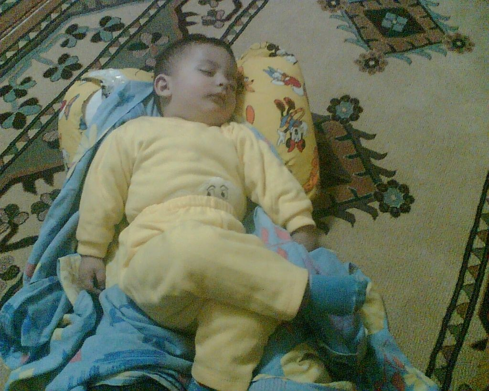
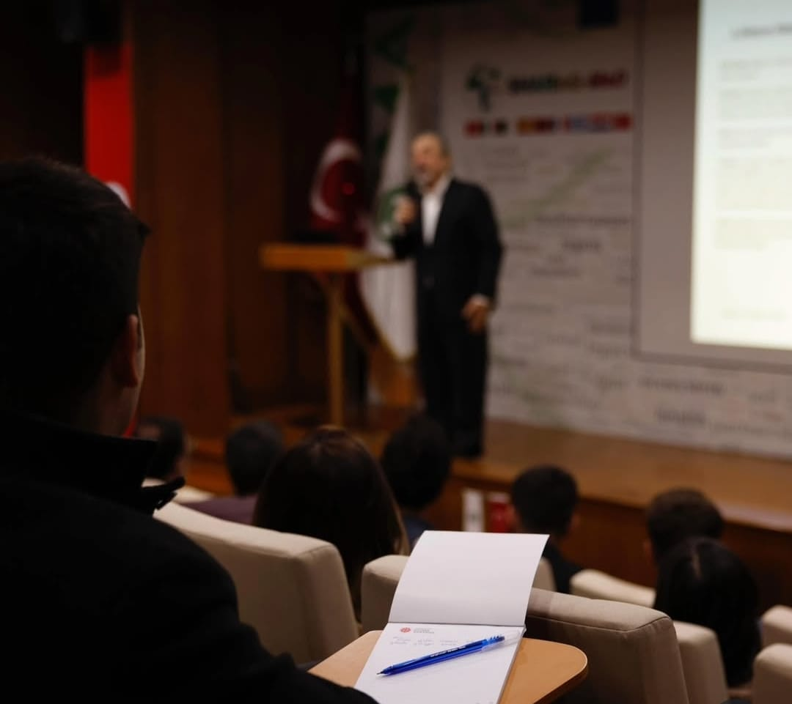

Biyografi
24 Mart 2005’te Kahramanmaraş’ta doğdum.
İlkokul yıllarında babamın eve getirdiği bilgisayarla teknolojiye ilgim başladı ve zamanla bu ilgi bir hedefe dönüştü.
Ortaokulda bilgisayar alanında ilerlemeye karar verdim.
Lisede, pandeminin de etkisiyle bilgisayar başında daha fazla vakit geçirdim;
bu süreçte yalnızca oyun oynamak yerine teknolojiye ve yazılıma daha bilinçli şekilde yönelmeye başladım.
Sınav yılımda 6 Şubat depremi gibi zorlu bir döneme rağmen Çukurova Üniversitesi Bilgisayar Bilimleri bölümünü kazandım.
Şu anda 3. sınıf öğrencisiyim. Üniversitede Yapay Zekâ Kulübü’nün kurucu başkanlığını yaptım;
daha geniş kitlelere hitap edebilmek ve daha fazla öğrenciyle birlikte üretmek için yoluma Bilgisayar Bilimleri Kulübü çatısı altında devam ettim.
Şu sıralar özellikle veri bilimi ve yapay zekâ alanına odaklanıyor ve kendimi sürekli geliştirmeye devam ediyorum.

Becerilerim
- Algorithms
- Data Structures
- Object Oriented Programming
- Parallel Programming
- C++, Python, Java, SQL
- Data Science & Machine Learning
- Statistical Inference
- Python: NumPy, Pandas, Matplotlib
- SQL
- R Programming
- MATLAB & Octave
- Web Development
- HTML, CSS, JavaScript
- Bootstrap
- React (Beginner)
- WordPress
- Hardware Design (Beginner)
- Verilog (HDL)
- ModelSim (Simulation)
- Digital Logic
- İletişim ve Sunum (Communication & Presentation)
- Takım Çalışması ve İş Birliği (Teamwork & Collaboration)
- Liderlik (Leadership)
- Proje Yönetimi ve Organizasyon (Project Management & Organization)
- Problem Çözme (Problem Solving)
- Uyum Sağlama ve Hızlı Öğrenme (Adaptability & Fast Learning)
- Sorumluluk Alma (Ownership)